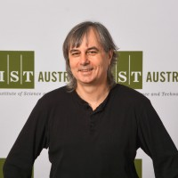
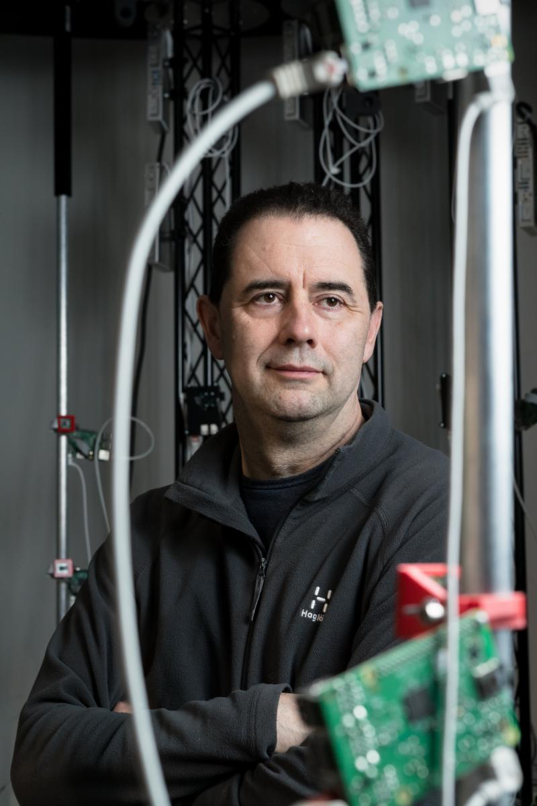
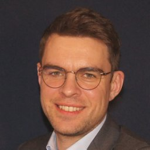
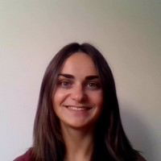

|
RSS Workshop: Topology meets RoboticsProposed event to be held in conjunction with Robotics: Science and Systems 2021 (RSS 2021) |
|---|
Confirmed speakers
|
Jeannette Bohg, Stanford University
Title TBD
Speaker bio: Jeannette Bohg is an Assistant Professor of Computer Science at Stanford University. She was a group leader at the Autonomous Motion Department (AMD) of the MPI for Intelligent Systems until September 2017. Before joining AMD in January 2012, Jeannette Bohg was a PhD student at the Division of Robotics, Perception and Learning (RPL) at KTH in Stockholm. In her thesis, she proposed novel methods towards multi-modal scene understanding for robotic grasping. She also studied at Chalmers in Gothenburg and at the Technical University in Dresden where she received her Master in Art and Technology and her Diploma in Computer Science, respectively. Her research focuses on perception and learning for autonomous robotic manipulation and grasping. She is specifically interesting in developing methods that are goal-directed, real-time and multi-modal such that they can provide meaningful feedback for execution and learning. Jeannette Bohg has received several awards, most notably the 2019 IEEE International Conference on Robotics and Automation (ICRA) Best Paper Award, the 2019 IEEE Robotics and Automation Society Early Career Award and the 2017 IEEE Robotics and Automation Letters (RA-L) Best Paper Award. |
|
Herbert Edelsbrunner, IST Austria
Title TBD  Abstract: TBD Speaker bio: Herbert Edelsbrunner is Professor at the Institute of Science and Technology Austria. He graduated from the Graz University of Technology, Austria, in 1982, he was faculty at the University of Illinois at Urbana-Champaign from 1985 through 1999, and Arts and Sciences Professor at Duke University from 1999 to 2012. He co-founded Geomagic in 1996, a software company in the field of Digital Shape Sampling and Processing. His research areas are algorithms, computational geometry, computational topology, data analysis, and applications to biology. He has published four textbooks in the general area of computational geometry and topology. In 1991, he received the Alan T. Waterman Award from the US National Science Foundation. In 2006, he received an honorary degree from the Graz University of Technology. He is a member of the American Academy of Arts and Sciences, the Germany Academy of Sciences (the Leopoldina), the Academia Europaea, and the Austrian Academy of Sciences. |
|
Daniel Koditschek, University of Pennsylvania
Title TBD
Speaker bio: Daniel E. Koditschek is the Alfred Fitler Moore Professor of Electrical and Systems Engineering, within the University of PennsylvaniaSchool of Engineering and Applied Science where he serves as Director of the Penn Engineering Research Collaboration Hub (PERCH). Koditschek received his bachelor’s degree in Engineering and Applied Science and his M.S. and Ph.D. degrees in Electrical Engineering in 1981 and 1983, all from Yale University. He served on the Yale Faculty in Electrical Engineering until moving to the University of Michigan a decade later. In January 2005, he moved to Penn as Chair of the recently formed Electrical and Systems Engineering Department, a position which he held through 2012. Koditschek’s research interests include robotics and, more generally, the application of dynamical systems theory to intelligent mechanisms. His more than 200 archival journal and refereed conference publications have appeared in a broad spectrum of venues ranging from the Transactions of the American Mathematical Society through The Journal of Experimental Biology, with a concentration in several of the IEEE journals and related transactions. Various aspects of this work have received mention in general scientific publications such as Scientific American and Science as well as in the popular and general lay press such as The New York Times and Discover Magazine. |
|
Steve Lavalle, University of Oulu
Title TBD  Abstract: TBD Speaker bio: Steven M. LaValle is Professor of Computer Science and Engineering, in Particular Robotics and Virtual Reality, at the University of Oulu, Finland. From 2001 to 2018, he was a professor in the Department of Computer Science at the University of Illinois. He has also held positions at Stanford University and Iowa State University. His research interests include robotics, virtual reality, sensor fusion, planning algorithms, computational geometry, and control theory. In research, he is mostly known for his introduction of the Rapidly exploring Random Tree (RRT) algorithm, which is widely used in robotics and other engineering fields. He also authored the books Planning Algorithms, Sensing and Filtering, and Virtual Reality. With regard to industry, he was an early founder and chief scientist of Oculus VR, acquired by Facebook for $3 billion in 2014, where he developed patented tracking technology for consumer virtual reality and led a team of perceptual psychologists to provide principled approaches to virtual reality system calibration, health and safety, and the design of comfortable user experiences. From 2016 to 2017, he was a Vice President and Chief Scientist of VR/AR/MR at Huawei Technologies, where he was a leader in consumer product development on a global scale. |
|
Andreas Orthey, TU Berlin & MPI IS
Title TBD  Abstract: TBD Speaker bio: TBD |
|
Anastasia Varava, KTH
Title TBD  Abstract: TBD Speaker bio: TBD |
 Abstract: TBD
Abstract: TBD Abstract: TBD
Abstract: TBD